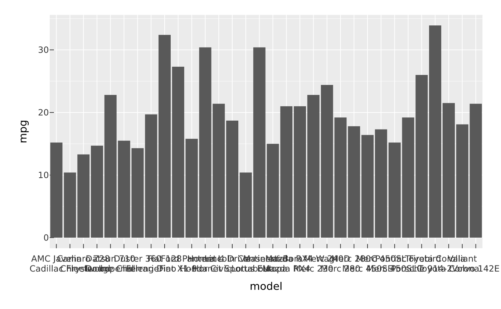
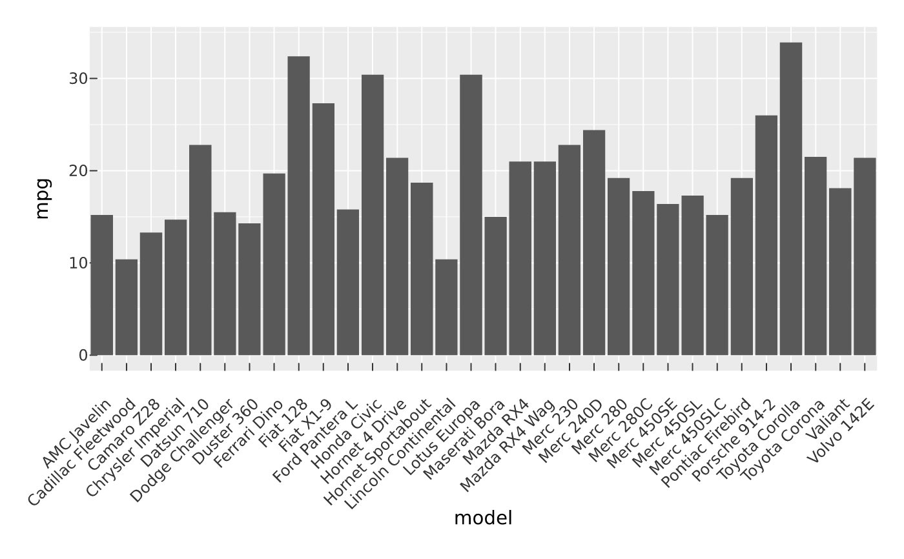
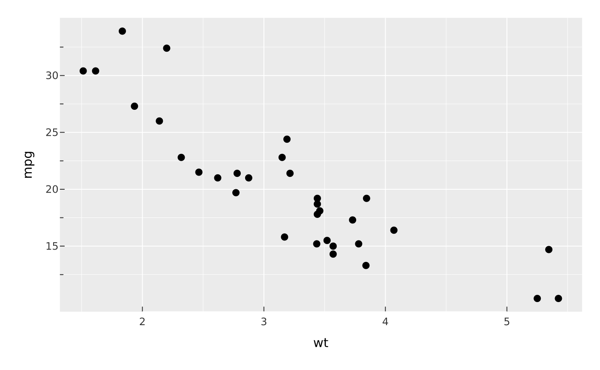

guide_axis() controls how a position axis draws its tick labels and line:
pass it as guides(x = guide_axis(...)) (or y), or as the guide of a
position scale (scale_x_continuous(guide = guide_axis(...))). As in
ggplot2, it can stagger crowded labels over several rows (n.dodge), rotate
them (angle), drop the ones that would overlap (check.overlap), add minor
ticks, and cap the axis line at the outermost breaks. The gutter that holds
the labels is measured with the dodging and rotation applied, so nothing is
clipped. guides(x = "none") draws the axis without labels or ticks.
guide_axis_logticks() draws log10 ticks: long ones at the
powers of ten, middle ones at 5 x 10^k and short ones at the other
integer multiples (ggplot2's guide_axis_logticks()). Use it on a
trans = "log10" axis, or with prescale.base = 10 on an axis whose data
are already log10 values.
Usage
guide_axis(
title = NULL,
check.overlap = FALSE,
angle = NULL,
n.dodge = 1,
minor.ticks = FALSE,
cap = "none"
)
guide_axis_logticks(
long = 2.25,
mid = 1.5,
short = 0.75,
prescale.base = NULL,
cap = "none",
title = NULL
)Arguments
- title
The axis title, or
NULLto keep the scale's.- check.overlap
If
TRUE, leave out labels that would overlap one already drawn, keeping the first, the last and then those in the middle first (ggplot2's priority). Needs the panel's size, so it applies to a plot with a set page size; free facet scales are thinned panel by panel, and fixed-aspect and marginal plots use their laid-out panel size. Polar axes keep every label.- angle
The rotation of the labels in degrees (overrides the theme's
axis.text.x/axis.text.yangle), orNULLto keep the theme's. The labels are justified so their ends meet the ticks.- n.dodge
The number of rows (x) or columns (y) to stagger the labels over, so neighbours alternate between them (default
1).- minor.ticks
If
TRUE, also draw shorter ticks halfway between the breaks (on a continuous scale).- cap
Cap the axis line (theme element
axis.line) at the outermost breaks:"none"(default; the line spans the panel),"both","upper"or"lower".TRUE/FALSEmean"both"/"none".- long, mid, short
Lengths of the ticks at 10^k, 5 x 10^k and the other multiples, relative to the theme's
axis.ticks.length.- prescale.base
The base the data were already log-transformed with (e.g.
10forlog10(x)plotted on a linear axis), orNULL(default) when the axis itself transforms (or the data are on their own scale).
Value
A guide specification for guides() or a scale's guide.
Examples
cars <- data.frame(model = rownames(mtcars), mpg = mtcars$mpg)
vplot(cars) |>
mark_bar(x = model, y = mpg) |>
guides(x = guide_axis(n.dodge = 2))

vplot(cars) |>
mark_bar(x = model, y = mpg) |>
guides(x = guide_axis(angle = 45))

vplot(mtcars) |>
mark_point(x = wt, y = mpg) |>
scale_y_continuous(guide = guide_axis(minor.ticks = TRUE)) |>
theme(axis.line = element_line()) |>
guides(x = guide_axis(cap = "both"))
